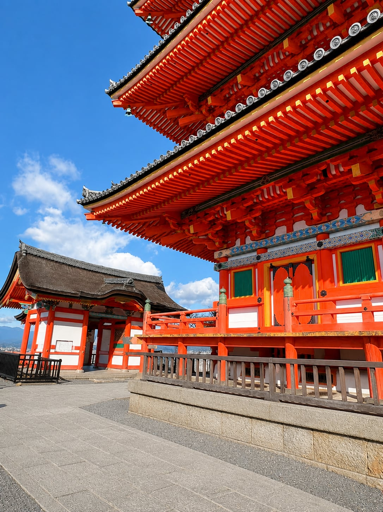
グエン・ティ・アン・チンによる東京旅行ガイド
Tokyo Metro Hibiya Line の Minowa Station から Ueno Station まで移動し、 上野駅で Yamanote Line に乗り換えて Ikebukuro Station へ向かいます。
上野駅で Yamanote Line に乗り換え、Ikebukuro Station まで行きます。 池袋駅から徒歩約15分で Mejiro Garden に到着します🌿
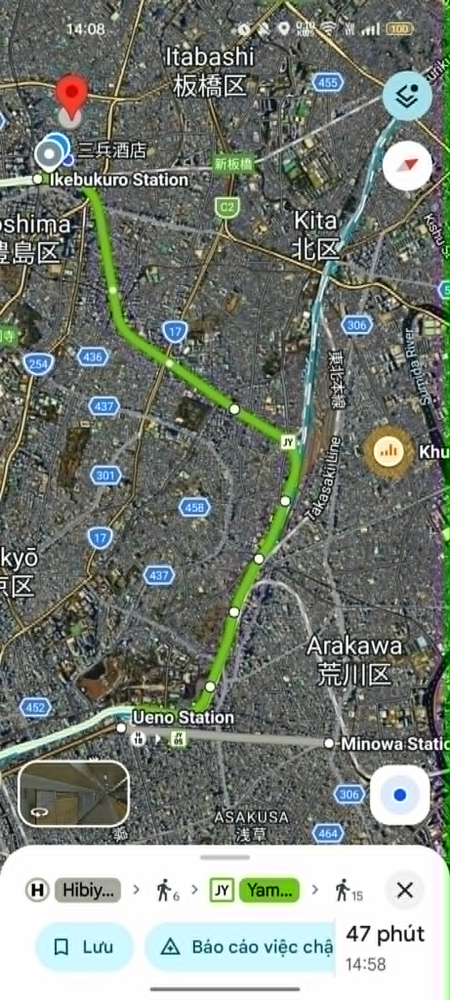
💴 運賃：約387円（Suica・PASMO利用可能）
⏰ 所要時間：約35〜45分
🚶 池袋駅から徒歩約15分で目白庭園に到着します。
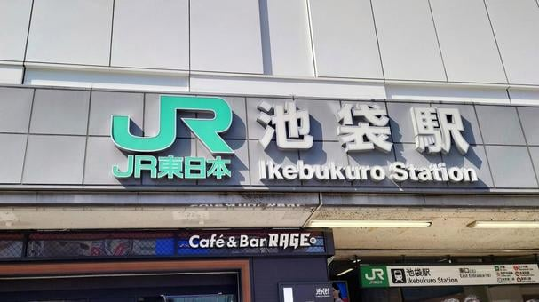
Ikebukuro は、東京を代表する有名でにぎやかなエリアの一つです。 Sunshine City や西武、東武などの大型商業施設があり、 アニメ・マンガ・ゲーム関連のお店も多く、若者に人気があります。
現代的でにぎやかな雰囲気がある一方で、 Mitake Shrine のような静かな場所もあり、 日本の伝統文化を感じることができます。
📍 日本の神社やお寺に入る前に、手や口を清める場所
💧 参拝の前に心身を清めるための場所です。
🌿 手水舎（Temizuya）は、日本の信仰文化における礼儀や敬意を表す大切な存在です。
📸 日本らしい伝統的な美しさが感じられるため、多くの観光客にも注目されています。
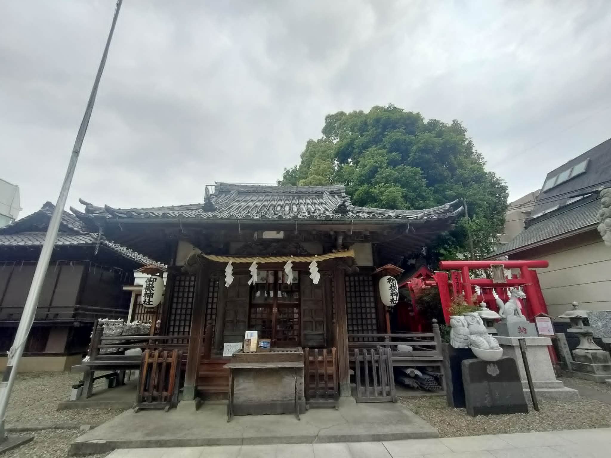
⛩️ 鳥居（Torii）：日本の神社にある伝統的な門で、神聖な場所への入り口を示しています。
🦊 赤い前掛けをした二体の狐（Kitsune）の像は、稲荷神の使いとされ、幸運や神社を守る存在を象徴しています。また、赤い前掛けには災いを払う意味も込められています。
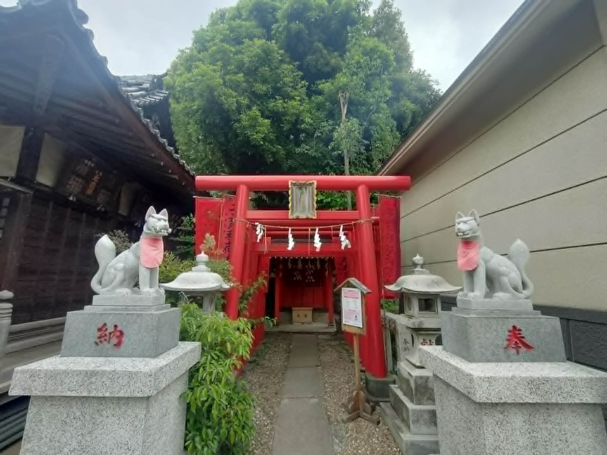
🏮 神輿展示エリアは、日本の伝統的なお祭りで使われる神輿（みこし）が展示されている場所です。
🙏 神輿には、神様を乗せて移動し、人々にご利益や守護をもたらすという意味があります。
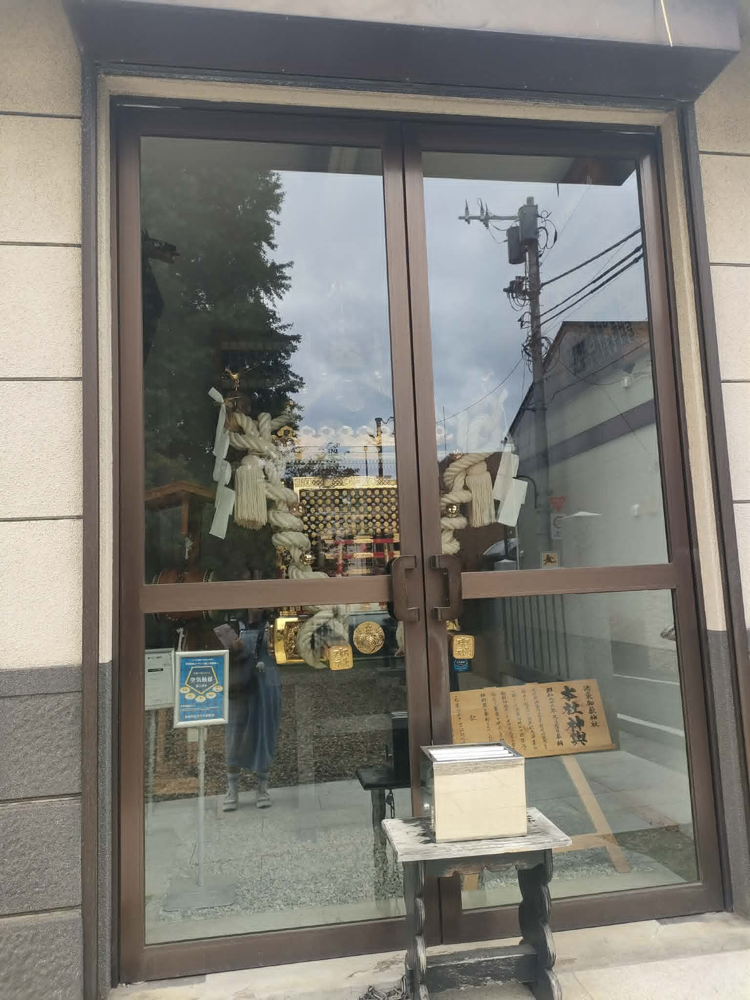
⛩️ 東京・池袋にある有名な神社
⛩️ 名称：Ikebukuro Mitake Shrine
📍 住所：東京都豊島区池袋3丁目51-2（〒171-0014）
🌿 にぎやかな都会の中にありながら、静かで落ち着いた雰囲気があります。
🦉 池袋のシンボルでもある「ふくろう」が特徴的な神社です。
📸 多くの人が参拝や写真撮影、開運祈願のために訪れます 🙏
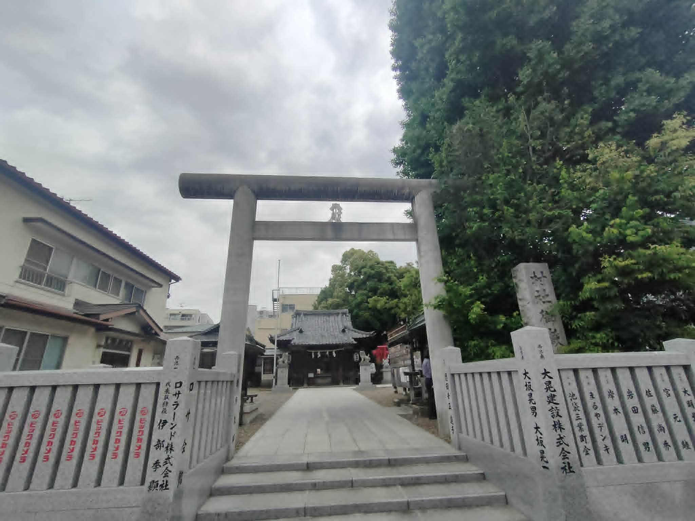
🚌 Ikebukuro Mitake Shrine 周辺から Sunshine 60 までは、バスで通常約10〜15分かかります。
⏰ バス乗車時間：約10〜15分
🚶 バス停までの移動や降車後の徒歩時間を含めると、合計で約20〜30分ほどです。
💴 運賃：約220円。
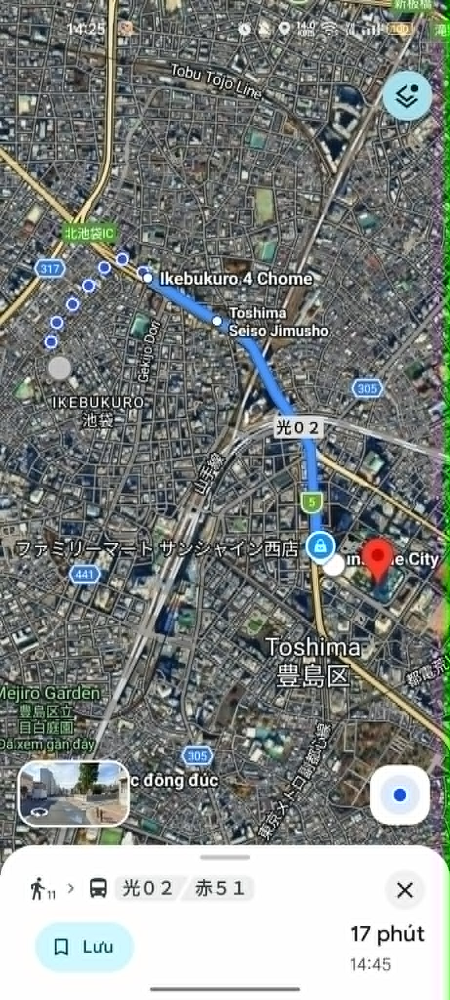
💴 運賃：約387円（Suica・PASMO利用可能）
⏰ 所要時間：約35〜45分
🚶 池袋駅から徒歩約15分で目白庭園に到着します。
Sunshine 60 Observatory Tenbou Park は、 池袋の有名な展望台です。
🌃 高層階から東京の景色を一望でき、特に夕方や夜景がとても美しいことで知られています。
📸 写真撮影や観光スポットとして、多くの観光客に人気があります。
✨ 東京らしい現代的でにぎやかな雰囲気を感じることができます。
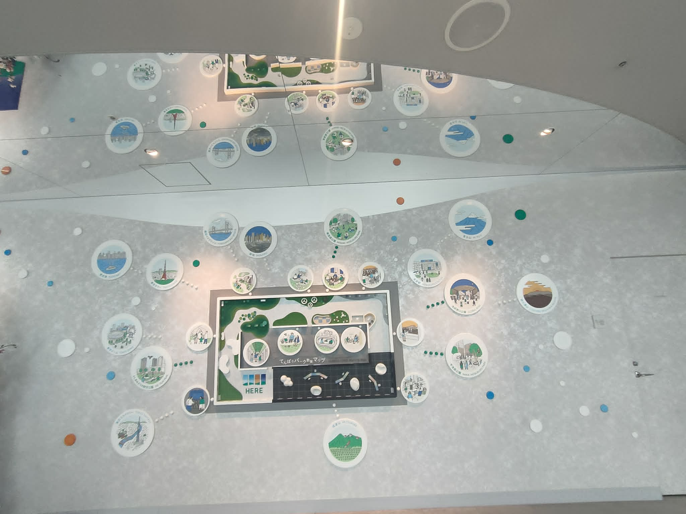
この地図は、イラストレーターの Toshinori Yonemura によって描かれたもので、 「365日の公園」というテーマでデザインされています。
🌸「Tenbou Park Sakura」 Tenbou Park Sakura は、Sunshine 60 Observatory Tenbou Park（池袋）の60階で開催される桜イベントです。 🌸 会場は桜をテーマに装飾されており、まるで東京の空の上から桜を眺めているような雰囲気を楽しむことができます。
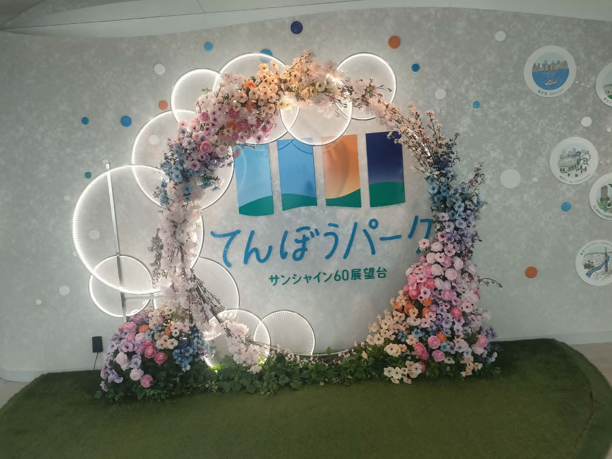
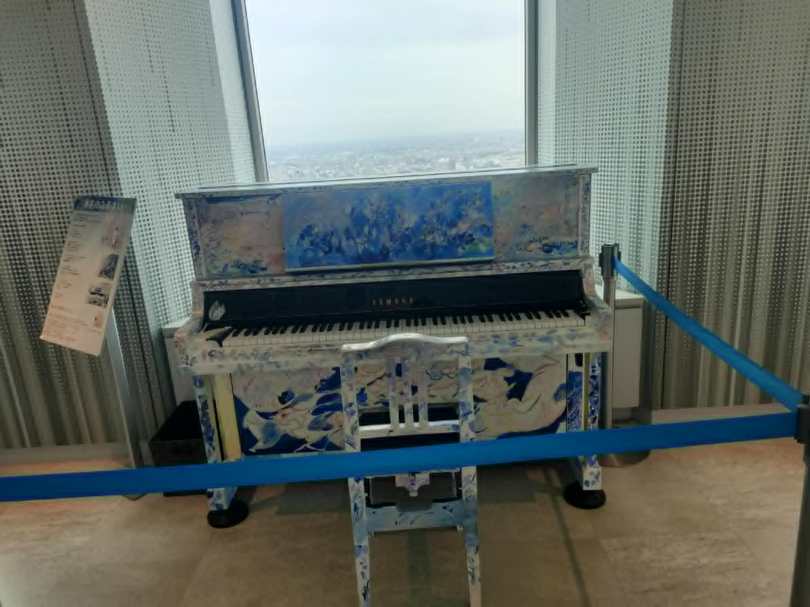
これは単なる演奏用の楽器ではなく、音楽を通じて人と人をつなぐという意味を持っています。
誰でも自由に弾くことができ、その場にいる人たちが音楽で自然に交流できるように設計された公共アートです。
📸 観光客に人気の写真撮影・観光スポットです。
🎫 入場料：1,200円
📍 住所： Sunshine 60 Observatory Tenbou Park
🕒 営業時間：10:00〜21:00
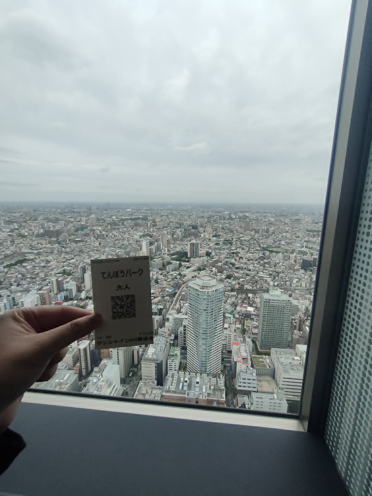
🌳 木の温かい雰囲気で、ジブリの世界のようにデザインされています。
🎁 フィギュアやぬいぐるみ、コップ、キーホルダーなどのお土産を販売しています。
🎬 日本のアニメの世界に入ったような気分を味わうことができます。
📸 観光客の方が写真をたくさん撮れるかわいいスポットが多くございます。
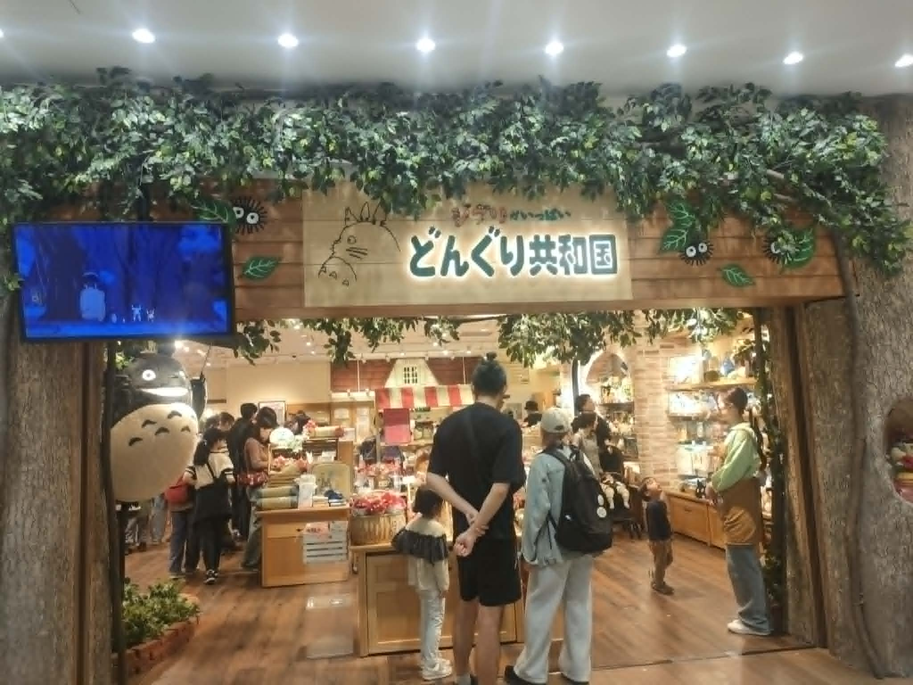
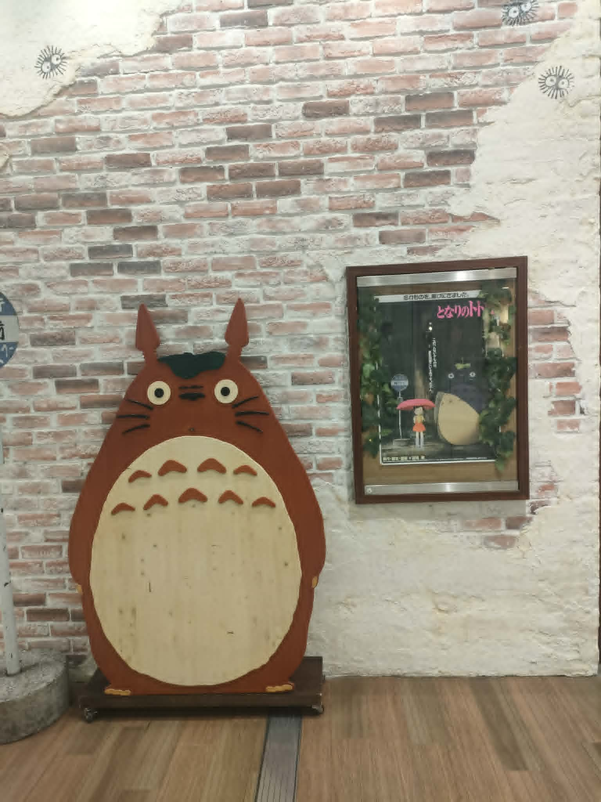
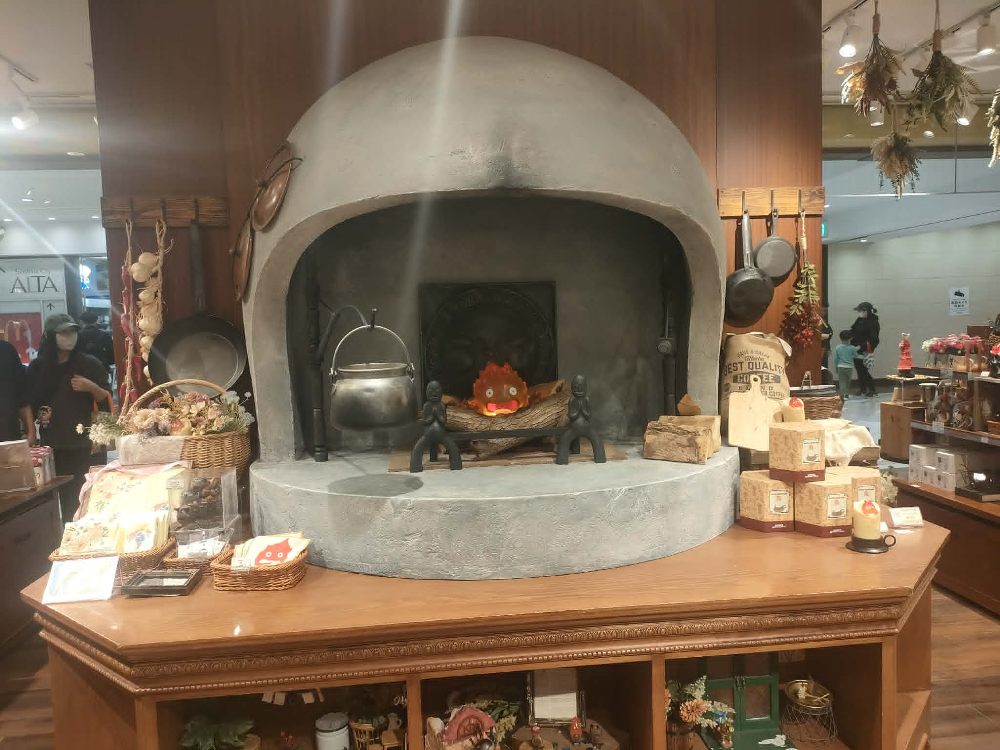
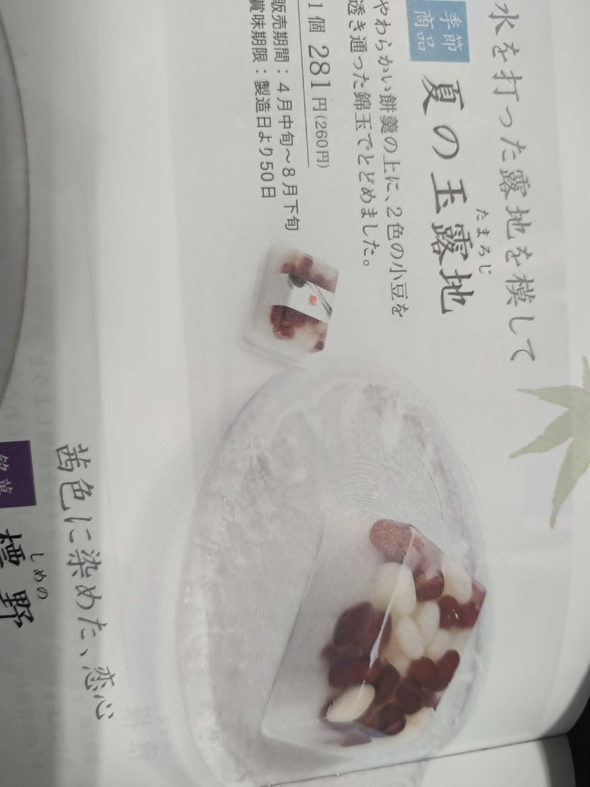
小豆と白いんげん豆を使用した日本の伝統的な和菓子です。 透明な寒天とやわらかいもち生地が特徴です。
価格：260円
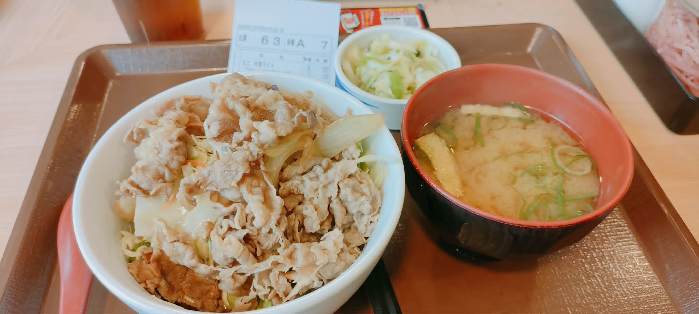
薄切り牛肉と玉ねぎを使った人気料理です。 セットには味噌汁とサラダが付いています。
価格：1200円
🚃 Tokyo Metro Hibiya Line の Minowa Station から Ueno Station まで行きます。
上野駅で Yamanote Line に乗り換えて 目白駅まで移動します。 目白駅から徒歩約15分で Mejiro Garden に到着します 🌿
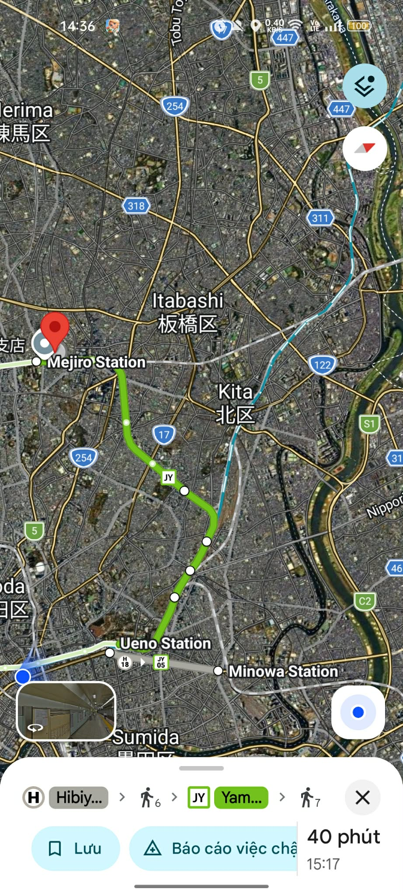
💴 運賃：約387円（Suica・PASMO利用可能）
⏰ 所要時間：約35〜45分
🚶 目白駅駅から徒歩約15分で目白庭園に到着します。
目白庭園は、目白駅 の近くにある小さくてとても静かな日本庭園です。
池泉回遊式の庭園で、中央には大きな池があり、鯉や小さな滝、そして日本の伝統的な茶室があります。
駅から徒歩約5分で行くことができます。
こちらは、東京・豊島区にある日本庭園「目白庭園」の正門です。
この門は「長屋門（ながやもん）」という様式で建てられており、 江戸時代の武士屋敷によく見られた伝統的な建築様式です。
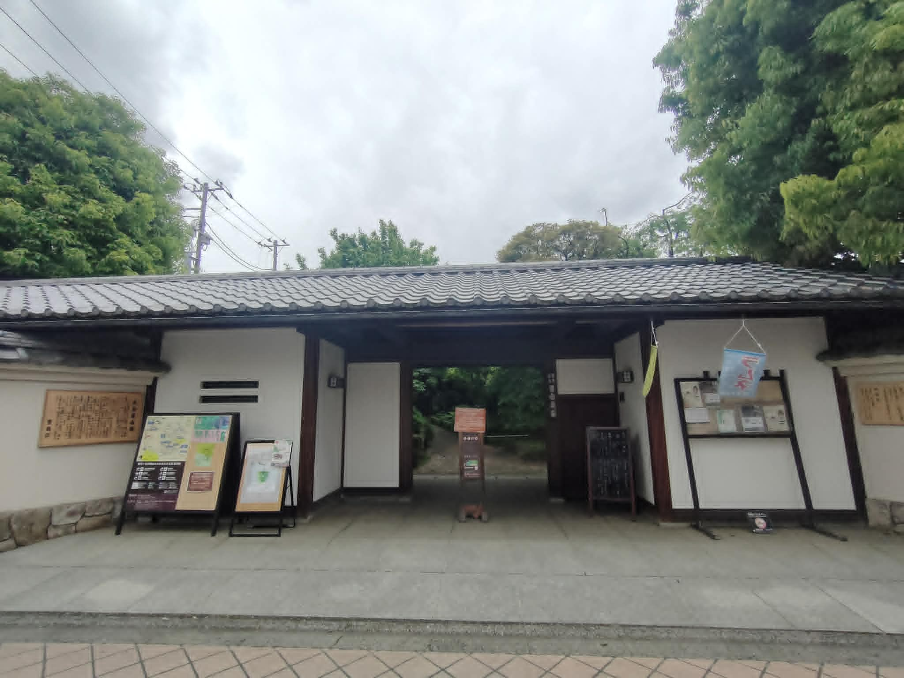
・中央の池：静かな水面が周囲の緑を映し出し、落ち着いた雰囲気を感じられます。
・伝統建築：池のそばにある茶室「赤鳥庵」は、数寄屋造りの趣ある建物です。
・豊かな自然：庭園にはモミジや桜などが植えられ、四季ごとに異なる美しい景色を楽しめます。
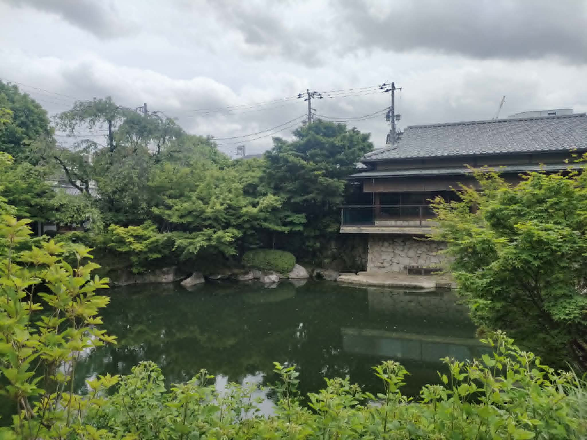
目白庭園は、四季折々の美しい景色にあふれています。 庭園のあらゆる場所で、自然と静かな風景の心地よい魅力を感じることができます。
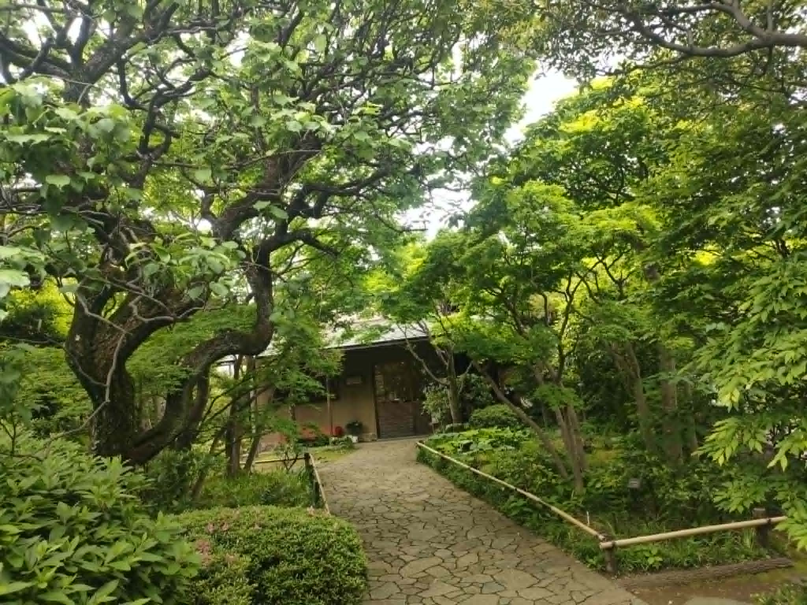
| 内容 | 金額 |
|---|---|
| 🚃 電車代 | 1548円 |
| 🚌 バス代 | 220円 |
| 🏢 サンシャイン60 | 1200円 |
| 🍞 玉露地 | 520円 |
| 🍜 牛丼 | 1200円 |
| 合計 | 4688円 |
特に、池袋駅に戻って見学できたことは、とても印象に残りました。 ここは私たちが以前実習をした場所です。 久しぶりに来たので、最初は少し道に迷ってしまいましたが、駅の案内表示を見ながら落ち着いて進み、 無事に目的の場所へ行くことができました。その時、実習のときのことを思い出し、少し懐かしい気持ちになりました。
また、日本の文化についても学ぶことができました。 鳥居や手水舎、神社などを通して、 日本人の礼儀や心の考え方について知ることができ、とても勉強になりました。 この3日間の見学を通して、私は多くのことを学び、実際の体験を通して自分の考え方も少し成長できたと思います。